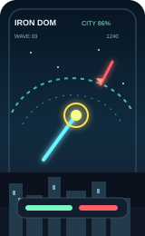

LiveOps & Game Systems
Live setup, reward logic, event systems, and KPI-driven iteration for live mobile games.
Technical Operations · LiveOps · Systems & Prototypes
Technical Operations Manager at SuperPlay (Dice Dreams). I support LiveOps setup, QA readiness, launch follow-up, and internal tooling across live mobile game delivery.
What I Do
Live setup, reward logic, event systems, and KPI-driven iteration for live mobile games.
Playable browser prototypes to test progression, economy loops, and difficulty tuning before bigger investment.
Internal tools, analytics dashboards, and workflow apps that improve live operations and recurring execution.
Selected Work
Selected work across live mobile gaming, balancing tools, gameplay prototypes, workflow apps, and supporting systems.
Progression & Tuning Prototype • Browser Game
Built a rhythm runner prototype to test gameplay flow, stage progression, economy decisions, and early difficulty tuning through quick iteration.

Sports PWA • Snake Draft System
Built a host-led drafting app that imports players from WhatsApp, assigns captains, and creates three fair football teams through a structured snake draft flow.
Retention Event Concept • Casual F2P
Designed a weekly risk-reward event with reward logic, KPI planning, and tuning hooks to test a stronger mid-week engagement loop.

Missile Defense Arcade • Mobile Web
Built a defense-focused arcade game around fast threat detection, precise targeting, and pressure-based missile interception.

Puzzle Prototype • Level Editor & Insights
Built a merge prototype with a live editor and insight view to shorten balancing loops and make tuning decisions faster and clearer.

Workflow App • iOS MVP Delivery
Shipped an inspection reporting app used by a real company, replacing a manual reporting flow with a faster capture-to-export workflow.
Mixed Reality Prototype • Interaction Testing
Built a Unity mixed-reality prototype to test interaction concepts quickly and explore practical technical design in a short development cycle.
Additional prototypes, tooling experiments, and workflow case studies across gaming and systems work.
Get in Touch
I'm strongest in roles that connect LiveOps execution, QA readiness, launch support, workflow ownership, and KPI follow-up in mobile games. If that sounds like your team, let's talk.